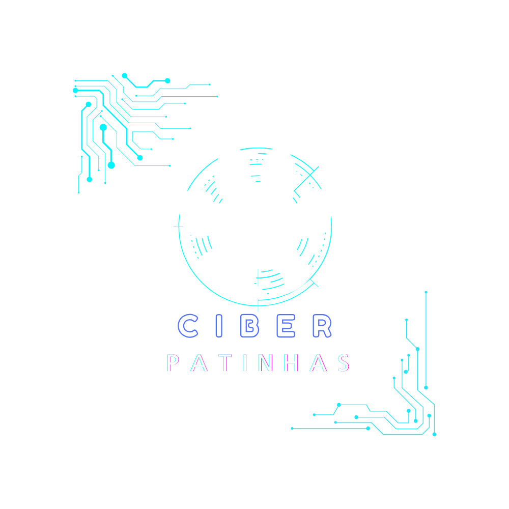

SEJA MUITO BEM-VINDO(A) AO PROJETO CIBERPATINHAS

Uma iniciativa dedicada a empregar a tecnologia em prol do bem-estar animal!
Nosso projeto, iniciado com o objetivo de criar um chatbot inovador, visa auxiliar ONG's dedicadas aos animais. O chatbot não apenas simplificará processos para essas organizações, mas também desempenhará um papel fundamental na conscientização e defesa da causa animal.
Acreditamos que a combinação única de inovação tecnológica e compaixão pode trazer mudanças significativas.
Junte-se a nós nesta jornada, enquanto avançamos para um futuro onde as patinhas digitais moldam um mundo mais compassivo para nossos amiguinhos de quatro patas!